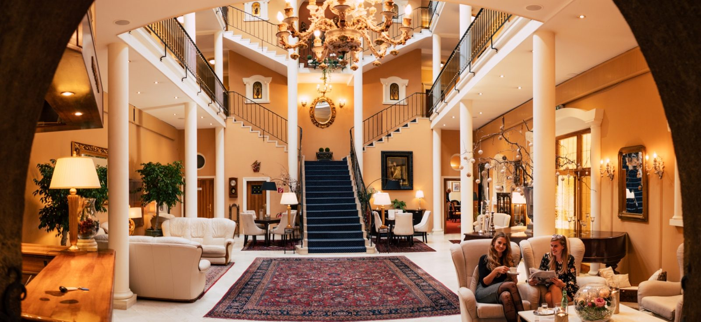
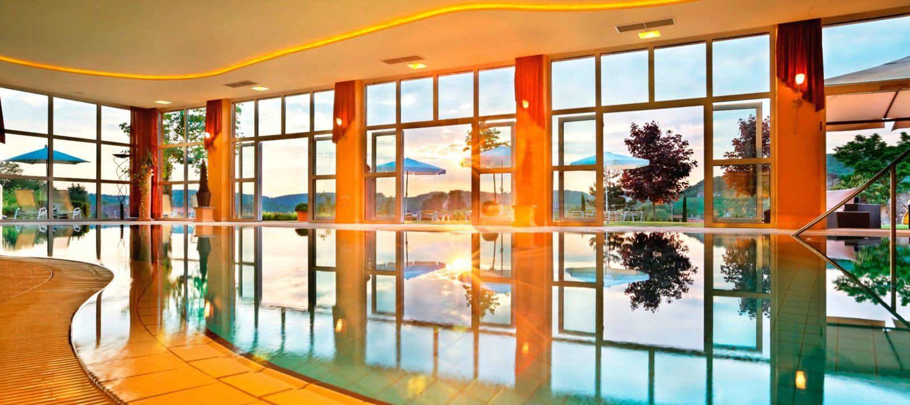
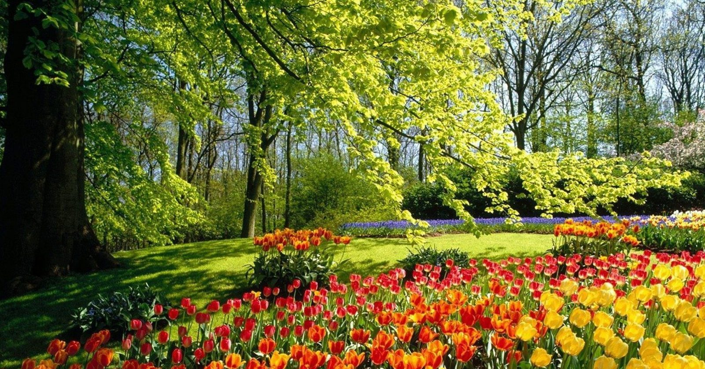
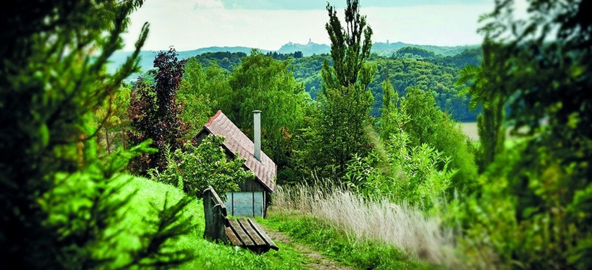

Michael Stenitzer
Führt den Betrieb gemeinsam mit seinem Bruder als Familienunternehmen.
Start · Das Haus
Von der Marienburg des Jahres 1857 zum 4-Sterne-Haus von heute: die Geschichte des Hotel Stenitzer, die Familie dahinter, Impressionen, Sport & Ausflüge und offene Stellen.
Bereits in dritter Generation wird das Hotel Stenitzer als Familienunternehmen geführt. Das ehemalige Bauernhaus wurde mehrmals renoviert und vereint auf einzigartige Weise Tradition und Moderne.
Das familiengeführte Hotel Stenitzer ist ein außergewöhnliches Viersternehotel in Bad Gleichenberg, in der Südoststeiermark. Mit seinen 4 Appartements, 24 Hotelzimmern und einem sehr großzügigen Wellnessbereich bietet es eine Kombination aus charmanter Tradition, ausgezeichnetem Service und moderner Ausstattung.
Genießen Sie unsere Gastfreundschaft und verbringen Sie erholsame Tage in einem wunderschönen Ambiente. Herzlichst Ihre Familie Stenitzer und das gesamte Hotelteam

Johann Riegler kauft mit seiner Frau Maria ein kleines Bauernhaus am nordöstlichen Rand des Kurortes Gleichenberg. Er baut es um und nennt es nach seiner Frau „MARIENBURG“.
Ein Brand zerstört die Marienburg vollständig. Herr Riegler baut das Haus wieder auf und erweitert es auf 35 Zimmer. Zusätzlich errichtet er Pferdestallungen und eine große Remise für die Equipagen der vermögenden Kurgäste.
Die Familie Karl Edler und Gisela Edle von Stenitzer kauft das durch die Kriegswirren ziemlich abgewohnte und baufällige Gebäude von den Nachkommen des Erbauers.
Am 19. Jänner wird das Hotel nach den Umbauarbeiten der einstigen Marienburg feierlich eröffnet. Der neugestaltete Innenhof – nunmehr Empfangshalle – wird zum Prachtstück des Hauses.
Klaus Edler von Stenitzer und seine Frau Stefanie führen das Hotel. Es wird laufend ausgebaut, renoviert und modernisiert.
Die größte Investition der Hausgeschichte: die Errichtung der Pool- und Wellnesslandschaft. Im selben Jahr wird die Gartenanlage neu eröffnet.
Michael und Christoph Stenitzer führen den Betrieb in dritter Generation als Familienunternehmen. Das Hotel befindet sich bis heute im Besitz der Familie Stenitzer.
Der hohe Servicegrad der Familie Stenitzer und ihres Teams ist einer der Gründe, warum Gäste Jahr für Jahr wiederkommen.
Führt den Betrieb gemeinsam mit seinem Bruder als Familienunternehmen.
Führt den Betrieb gemeinsam mit seinem Bruder als Familienunternehmen.
Rezeption, Service, Küche, Wellness, Housekeeping und Garten – gemeinsam mit der Familie Stenitzer.
Werfen Sie einen Blick in die Bildgalerie und verschaffen Sie sich einen ersten Eindruck.



Fotos & Bildkonzept der bestehenden Website: Mag. Bernhard Bergmann || Fotografie.
Das Hotel liegt auf einer sanften Anhöhe im Kur- und Thermenort Bad Gleichenberg – ein guter Startpunkt für alle, die den Tag draußen verbringen.
Wandern in der Hügellandschaft rund um den Ort, Radrunden durchs Thermen- & Vulkanland und danach zurück ins Hallenbad: Gerne stellen wir Ihnen zur Anreise passende Tourentipps zusammen.
Idealer Ausgangspunkt für zahlreiche Ausflüge ins Thermen- und Vulkanland.
Das Hotel Stenitzer ist nicht nur eine wunderschöne Urlaubsdestination, sondern auch ein hervorragender Arbeitsplatz.
Auf der bestehenden Website gibt es zwar eine Jobs-Seite, aber keinen Weg zur Bewerbung. Dieses Modul schließt die Lücke: Bereich wählen, Eckdaten angeben, abschicken – fertig.
Die jeweils offenen Positionen pflegt der Betrieb im Live-Betrieb selbst ein.